AwesomePackage: Quick Start
Jonathon Chow
2022-10-01
Source:vignettes/AwesomePackage.Rmd
AwesomePackage.RmdThis vignette is a brief introduction to AwesomePackage. You first
need to library AwesomePackage. You will use the package data:
data_TGP, data_HGDP, map_TGP,
map_HGDP. See Reference in AwesomePackage
for an introduction of these data.
Fit PSD model
PSD model and data
We consider the sample data from the 1000 Genomes Project (TGP) and use a PSD model to fit these data. We import the pre-trained results directly.
load(system.file("extdata", "result_fit_psd.RData", package = "AwesomePackage", mustWork = TRUE))Fit PSD model by EM algorithm
We fit the PSD model with EM algorithm, and use the loss function as a stopping criterion. EM algorithm converges slowly. It takes about 450 EM iterations to reach the predetermined accuracy.
result_TGP_em <- psd_fit_em(data_TGP, 3, 1e-5, 500)
# [=========================================================>------] 450/500 ( 3m)We plot the loss function against the number of iterations using package ggplot2, the loss function records once for 10 iterations.
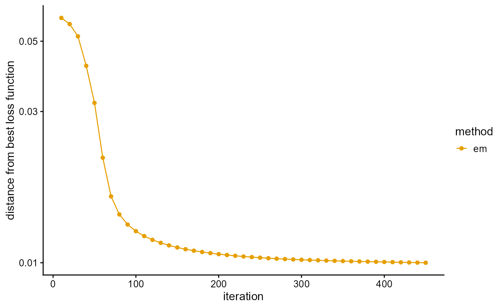
We plot the ancestral proportions of individuals using package ggplot2. The fitting result of EM algorithm is not very accurate.
P <- result_TGP_em$P
plot_structure(P)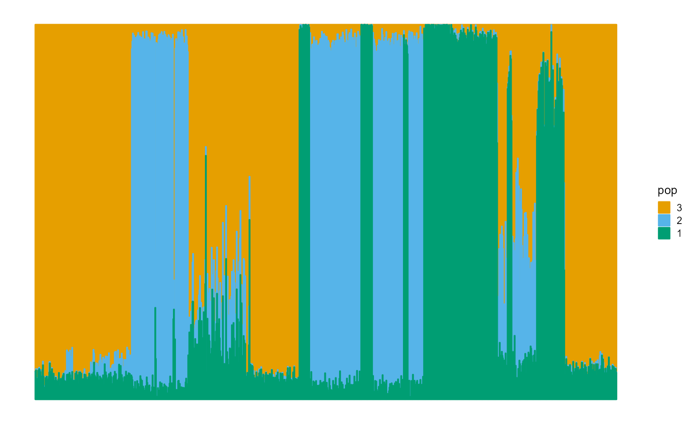
We measure the prediction accuracy of the dataset by the maximum likelihood function and the deviance residuals.
L[length(L)]## [1] -0.5971432
psd_error(data_TGP, result_TGP_em)## [1] 0.3374755Fit PSD model by SQP algorithm
We fit the PSD model with SQP algorithm, and use the loss function as a stopping criterion. Although SQP algorithm converges fast, it is easy to converge to the local optimal value. To prevent this bad scenario, we start with 100 EM iterations, and then only need about 40 SQP iterations to reach the accuracy requirement.
result_TGP_sqp <- psd_fit_sqp(data_TGP, 3, 1e-5, 50, 100)
# [================================================================] 100/100 (35s)
# [====================================================>-------------] 40/50 ( 1m)We plot the loss function against the number of iterations using package ggplot2, the loss function records once for 10 iterations.
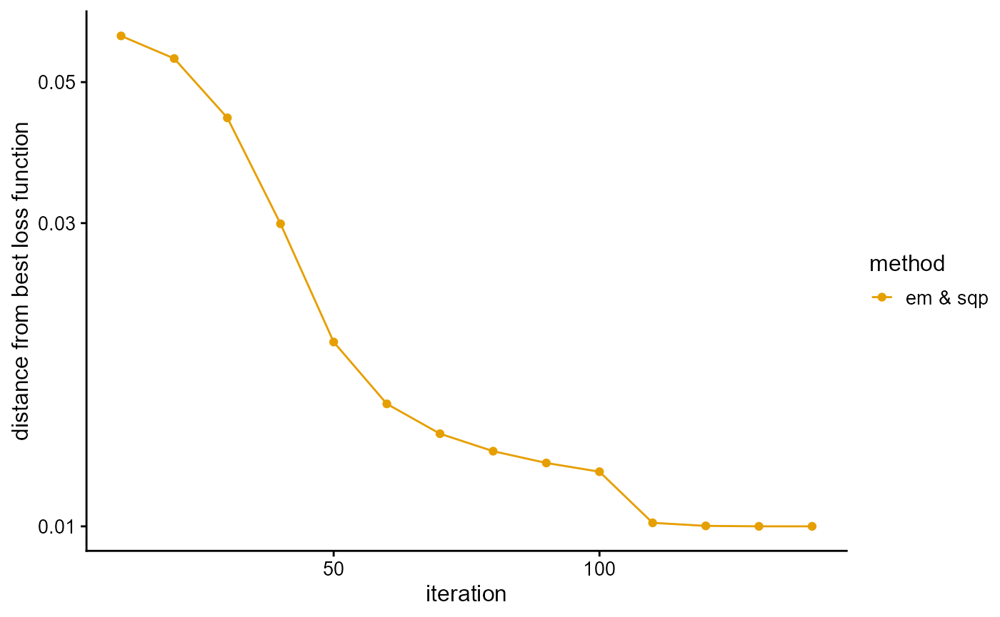
We plot the ancestral proportions of individuals using package ggplot2. Notice that the fitting result of the SQP algorithm is excellent.
P <- result_TGP_sqp$P
plot_structure(P)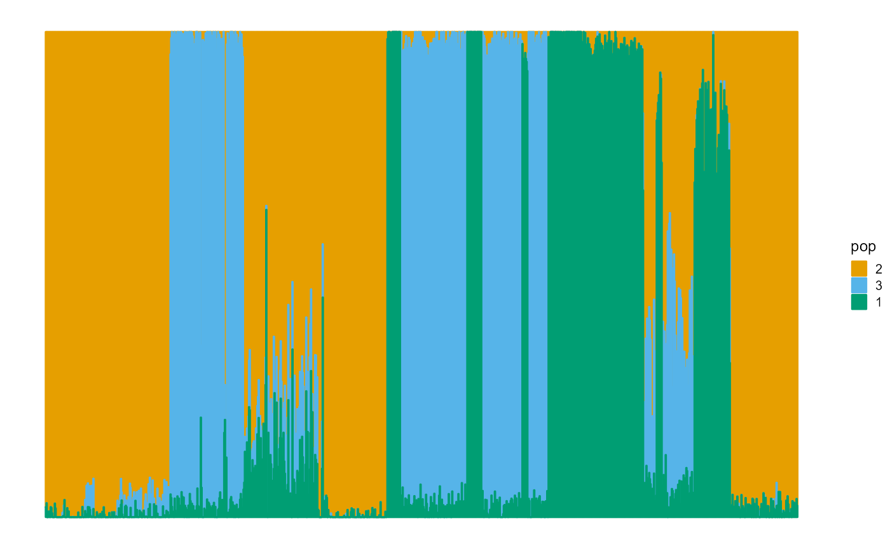
We measure the prediction accuracy of the dataset by the maximum likelihood function and the deviance residuals.
L[length(L)]## [1] -0.5969287
psd_error(data_TGP, result_TGP_sqp)## [1] 0.3372611Fit PSD model by VI algorithm
We fit the PSD model with VI algorithm, and use the loss function as a stopping criterion. Similar to EM algorithm, the convergence of VI algorithm is also relatively slow, and about 490 iterations are needed to reach the accuracy requirement.
result_TGP_vi <- psd_fit_vi(data_TGP, 3, 1e-5, 500)
# [==============================================================>-] 490/500 ( 2m)We plot the loss function against the number of iterations using package ggplot2, the loss function records once for 10 iterations.
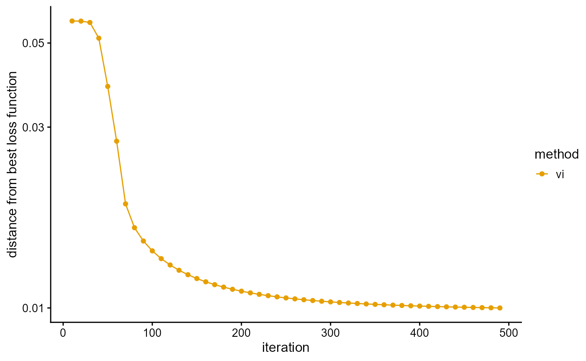
We plot the ancestral proportions of individuals using package ggplot2. The fitting result is much better than EM algorithm.
P <- result_TGP_vi$P
plot_structure(P)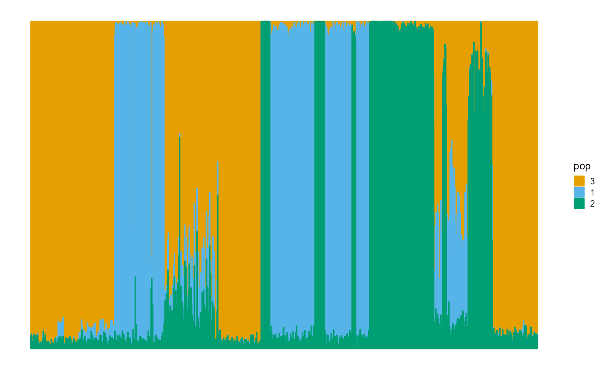
We measure the prediction accuracy of the dataset by the evidence of lower bound (ELBO), the maximum likelihood function and the deviance residuals.
L[length(L)]## [1] -0.6103088
psd_loglikelihood(data_TGP, result_TGP_vi)## [1] -0.59751
psd_error(data_TGP, result_TGP_vi)## [1] 0.3378423Fit PSD model by SVI algorithm
We fit the PSD model with SVI algorithm, and use the loss function as a stopping criterion. We completed the fitting in 13 min, little longer than the previous three algorithms. Although SVI algorithm is known for its fast speed, this is for the dataset with a large number of individuals. It can be predicted that for the complete TGP data, SVI algorithm still needs about the same time, but the time of other algorithms will be greatly increased. Perhaps the time of these algorithms is similar for data similar to TGP data size, but if the number of individuals is large, the performance of SVI algorithm is much better, which is also the superiority of SVI algorithm.
result_TGP_svi <- psd_fit_svi(data_TGP, 3,
1e-5, 5e+5, 1e+4, 3,
100, 2000,
5e-2, 1e-1,
1, 0.5)
# [============>----------------------------------------------] 110000/5e+05 (13m)We plot the loss function against the number of iterations using package ggplot2, the loss function records once for 10,000 iterations. The most natural thing to do is to use the change in the loss function as a stopping criterion, but as can be seen below, this is the loss function on the validation set so is not necessarily monotonic. When the sampling interval is too large, the loss function will oscillate near the optimal value, so that the cycle cannot be finished. When the sampling interval is too small, the loss function will be almost constant, resulting in premature exit from the loop. However, proper sampling intervals are difficult to find. We simply added a maximum number of iterations (in this case, 50,000) as a stopping criterion, and the loss function was only used as a post-hoc metric.
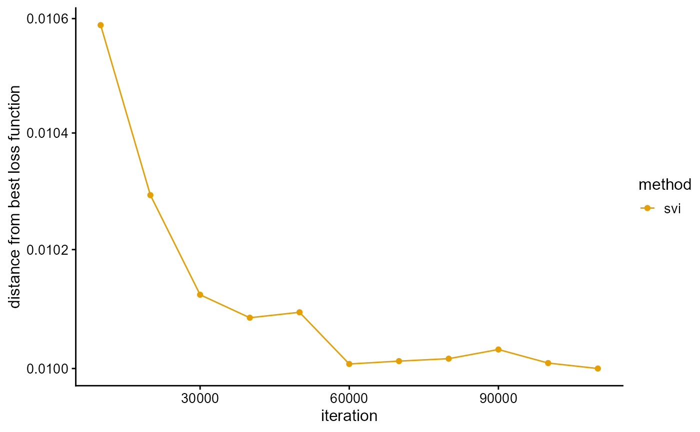
We plot the ancestral proportions of individuals using package ggplot2. The convergence accuracy of SVI algorithm is also very good.
P <- result_TGP_svi$P
plot_structure(P)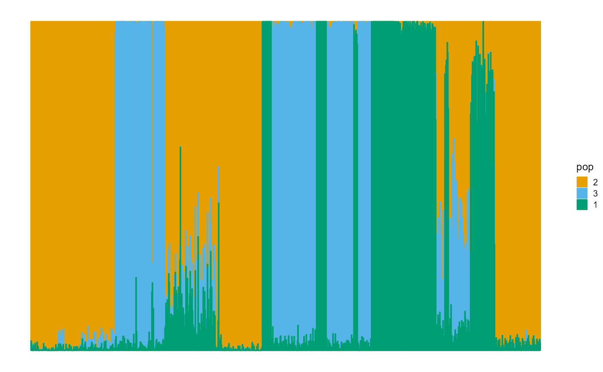
We measure the prediction accuracy of the dataset by the maximum likelihood function of the validation set.
result_TGP_svi$MaxLoss## [1] -0.614379Structure plot
We analyze the structure diagrams of the above four algorithms for TGP and HGDP. We import the pre-trained results directly.
load(system.file("extdata", "result_structure_plot.RData", package = "AwesomePackage", mustWork = TRUE))TGP
result_TGP <- psd_fit_vi(data_TGP, 4, 1e-5, 2000)
# [=========================>-------------------------------------] 840/2000 ( 4m)
P <- result_TGP$P
label <- rownames(data_TGP)
lpop <- unlist(map_TGP[1])
spop <- unlist(map_TGP[2])
indiv <- unlist(map_TGP[3])Large populations.
plot_structure(P, label = label, map.indiv = indiv, map.pop = lpop, gap = 5)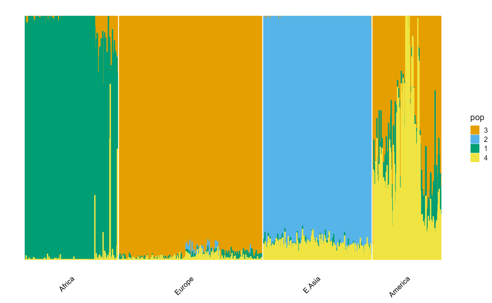
Small populations.
plot_structure(P, label = label, map.indiv = indiv, map.pop = spop, gap = 5)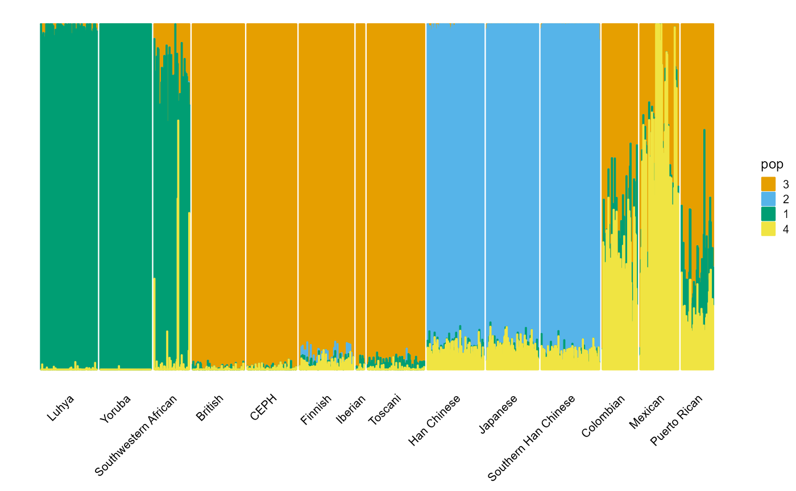
HGDP
result_HGDP <- psd_fit_vi(data_HGDP, 7, 1e-5, 2000)
# [=============================>---------------------------------] 940/2000 ( 5m)
P <- result_HGDP$P
label <- rownames(data_HGDP)
lpop <- unlist(map_HGDP[1])
spop <- unlist(map_HGDP[2])
indiv <- unlist(map_HGDP[3])Large populations.
plot_structure(P, label = label, map.indiv = indiv, map.pop = lpop, gap = 5)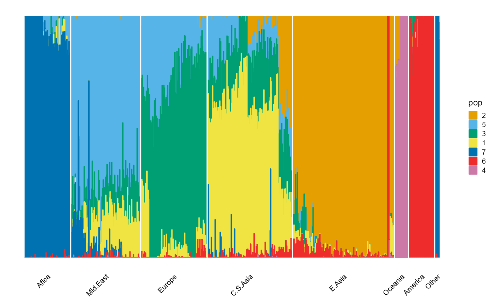
Small populations.
plot_structure(P, label = label, map.indiv = indiv, map.pop = spop, gap = 3, font.size = 5)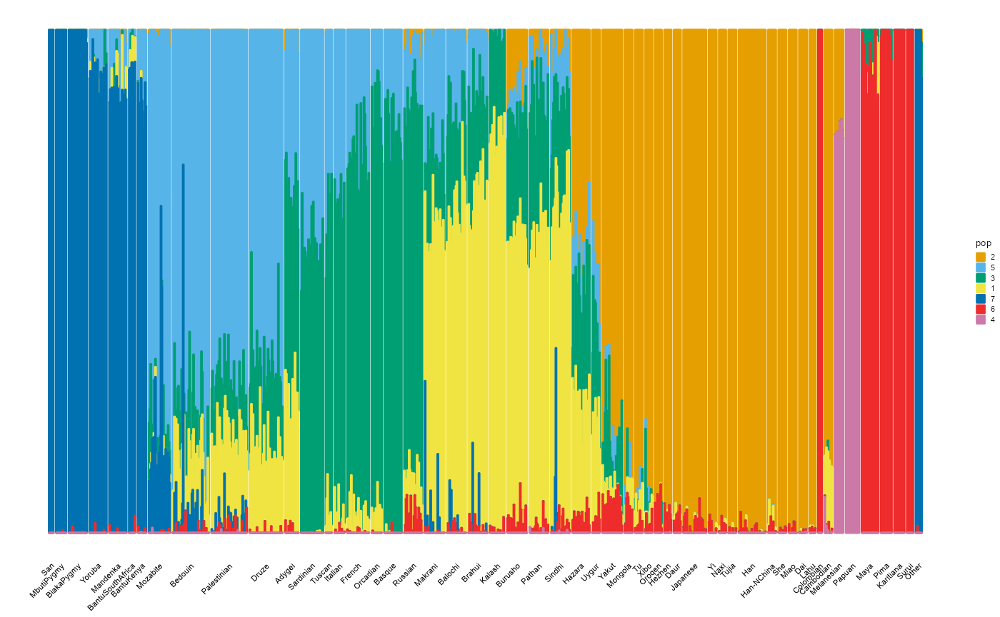
Choose hyper-parameter K
We fit different hyperparameters K respectively, and
select the K that makes some indices optimal. We conduct
experiments on TPG and HGDP datasets and different algorithms
separately. See Articles in AwesomePackage
for details.